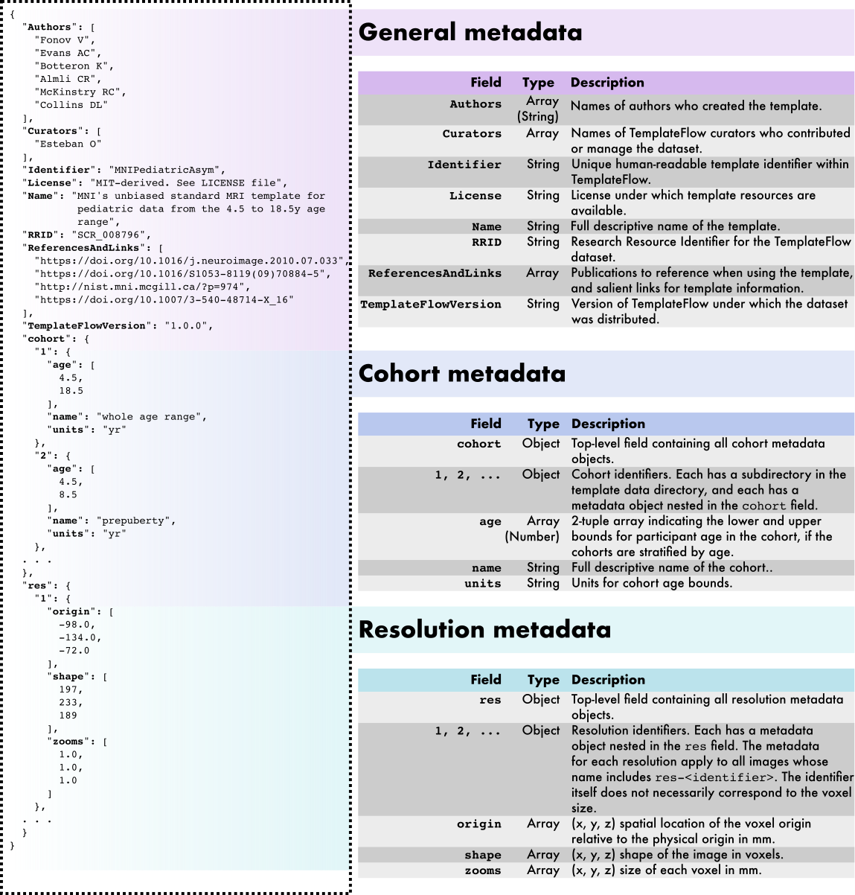

TemplateFlow Archive
The TemplateFlow Archive aggregates all the templates for redistribution. The archive uses DataLad to maintain all templates under version control.
Accessing the Archive via the Python client ¶
The recommended way to use TemplateFlow is via the Python Client
Accessing the Archive via DataLad ¶
First, make sure you have a functional installation of DataLad.
The archive has a top-level data structure to maintain all templates.
This is the
super-dataset
, and it is maintained on
GitHub
.
The latest stable super-dataset can be referenced with
///templateflow
:
$ datalad install -r ///templateflow
The
-r
switch ensures all available templates are also
installed
.
Once the super-dataset and its siblings are installed, metadata will be already accessible. However, the different imaging data resources (NIfTI, GIFTI and transforms files) have to be pulled down.
For example, to download the complete
tpl-MNI152NLin2009cAsym
:
$ cd templateflow
$ datalad get -r tpl-MNI152NLin2009cAsym
Acceptable data types ¶
The TemplateFlow Archive contains template resources.
| Common file formats included in the TemplateFlow Archive . |
|  |
|---|
Overview of the
TemplateFlow Archive
metadata specification
.
TemplateFlow
metadata are formatted as JavaScript Object Notation (JSON) files located at the top of the template's directory. An example
template_description.json
metadata file is displayed at left (for the pediatric MNI template). In addition to general template metadata,
TemplateFlow
datasets can contain cohort-level and resolution-level metadata, which are nested within the main metadata dictionary and apply only to subsets of images in the dataset.
|